Using autonomous SRE to move from alerts to action
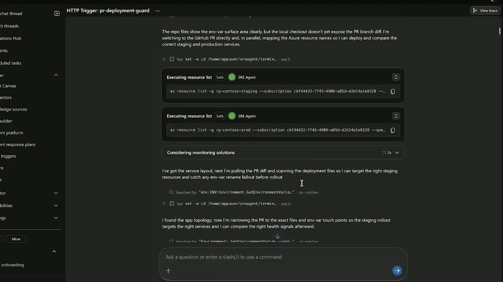
Chapters
Official description
What happens when AI agents don’t just observe incidents—but act on them? Discover how autonomous remediation, SLO management, and deep observability are redefining modern SRE workflows and changing how teams operate large scale production systems.
Summary
Overview
Azure SRE Agent product managers demonstrate an AI-powered agent that moves site reliability engineering from passive alerting to autonomous action across the software lifecycle. Through two live demos, the session shows the agent preventing risky deployments via canary testing and automatically diagnosing, root-causing, and remediating a production incident, all while integrating with existing developer and incident-management tools.
Key announcements
- Azure SRE Agent for incident management and resource optimization — An always-on AI teammate that automates operational tasks, accelerates root cause analysis, and is fully customizable to an organization's standards (00:03:58
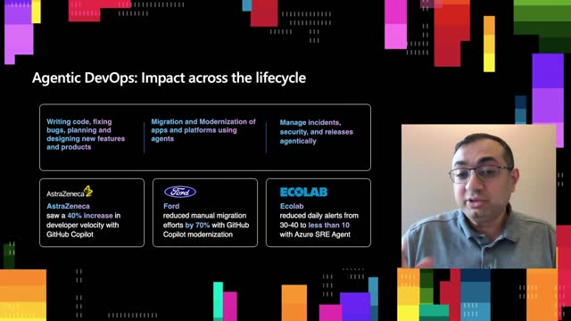
m05s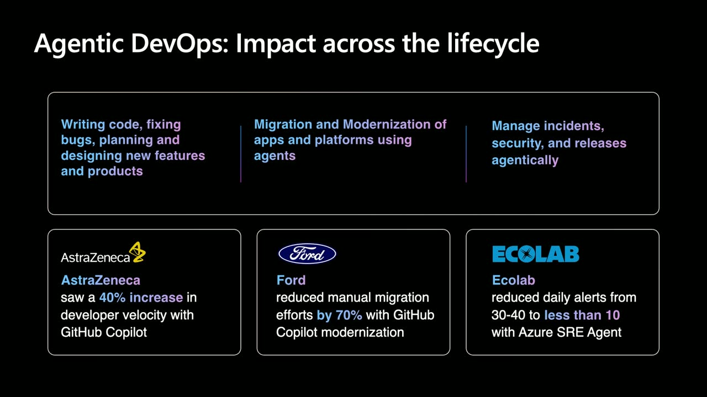
m10s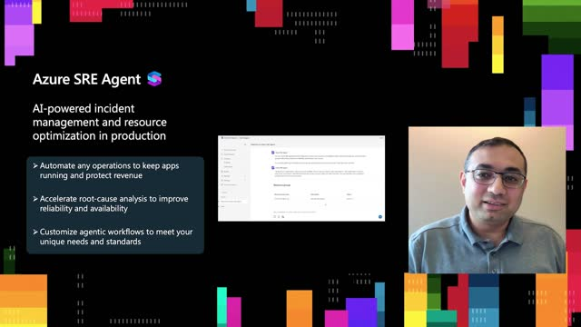
p05s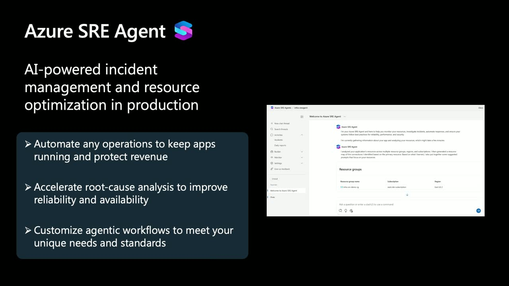
p10s). - CLI-based agent creation and management — Developers can create, configure, and interact with the SRE Agent entirely from developer tools like the terminal and Copilot CLI, using prebuilt recipes from the Microsoft SRE Agent repo rather than the Azure Portal (00:09:05
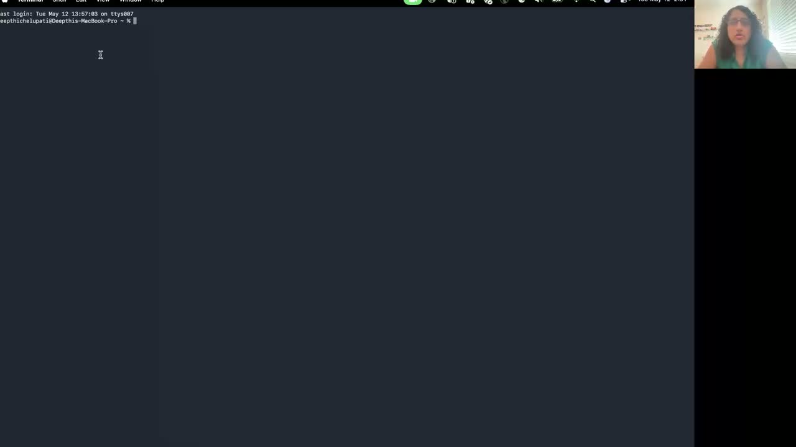
m05sm10s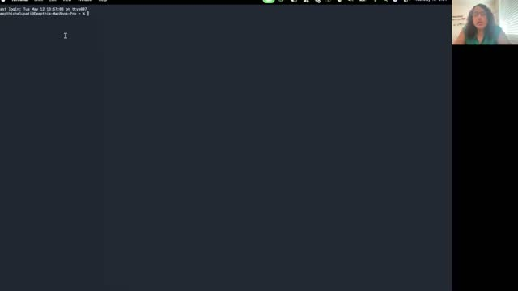
p05sp10s). - SRE Agent endpoint as an MCP server — The agent can be accessed as an MCP server to view analyses or configure it outside the Azure Portal (00:14:46
 m05s
m05s m10s
m10s p05s
p05s p10s).
p10s). - Three operational modes — Interactive (Copilot-style), reactive (alert-driven response via Azure Monitor, PagerDuty, ServiceNow), and proactive (scheduled cron-based health, compliance, and security checks) (00:40:50
 m05s
m05s m10s
m10s p05s
p05s p10s).
p10s). - Enterprise trust and control layer — Built-in reader/standard/administrator roles, per-agent user-assigned managed identity, "on behalf of" elevation, review versus autonomous run modes, command validation hooks, and KQL-queryable audit trails in Application Insights (00:37:30
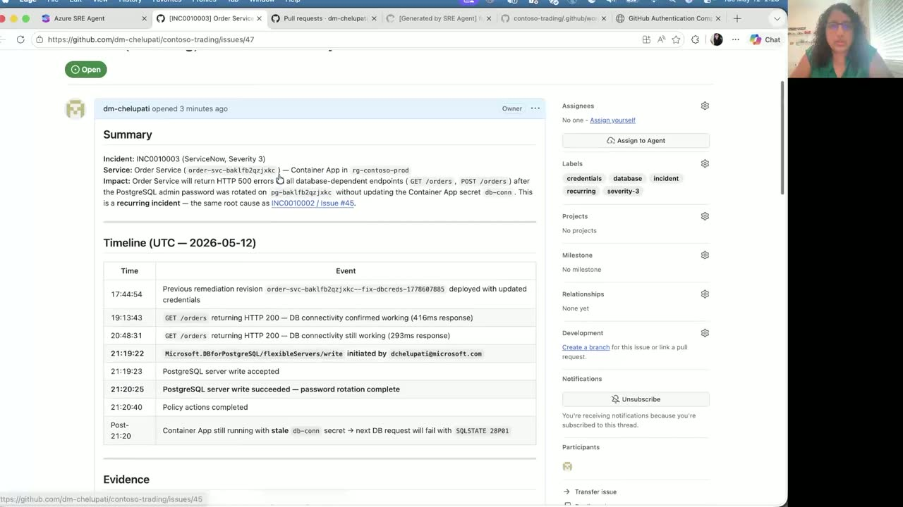
m05s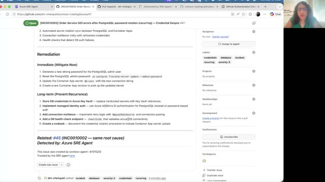
m10s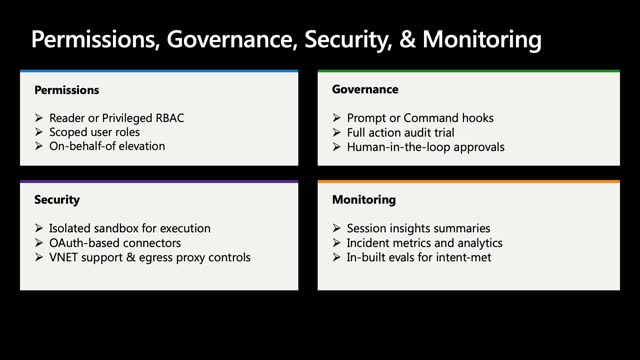
p05s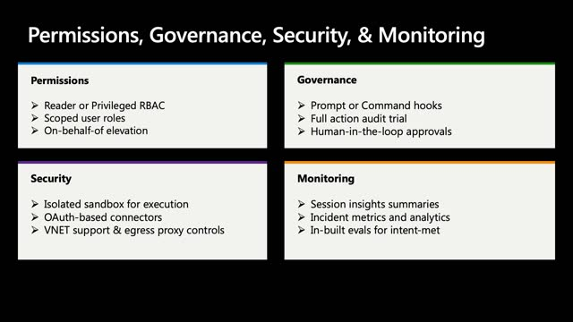
p10s). - Inbuilt evaluation metrics — An Intent Met quality score automatically calculated on every completed thread, rated on a one-to-five scale (00:40:23
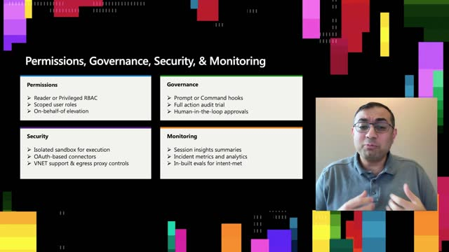
m05s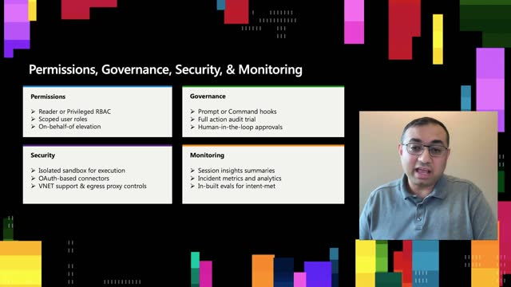
m10s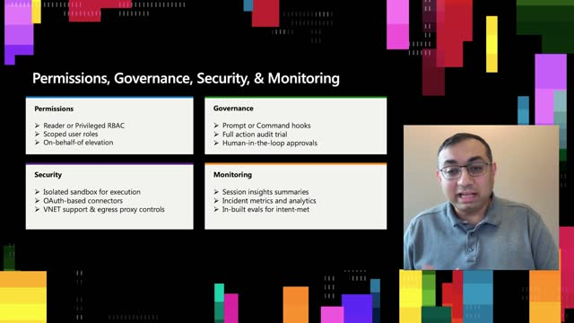
p05s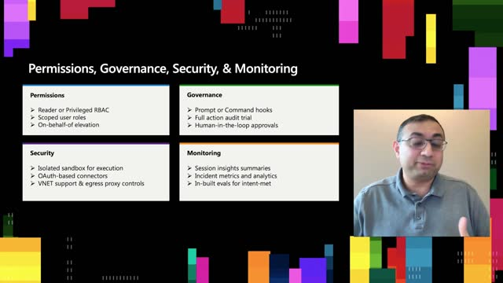
p10s).
{kind=link}
{kind=link}
{kind=link}
{kind=link}
{kind=link}
{kind=link}
{kind=link}
{kind=link}
{kind=link}
{kind=link}
{kind=link}
{kind=link}
{kind=link}
{kind=link}
{kind=link}
{kind=link}
Topics covered
- Reducing operational toil across inner-loop and outer-loop software development.
- Event-driven canary testing of pull requests in a staging environment before production merge.
- Connecting the agent to GitHub, Azure DevOps, Dynatrace, Log Analytics, and Azure activity logs.
- Recipe-based agent configuration using markdown instructions, YAML skill/sub-agent specs, and seeded core memory.
- Multi-path transparent root cause analysis evaluating multiple hypotheses against telemetry.
- Automated, reversible mitigation (restarts, scale adjustments, rollbacks) with human-in-the-loop guardrails.
- Incident automation through ServiceNow, including diagnosis, GitHub issue creation, and autonomous remediation of a credential-desync database password rotation.
- Agent memory of past incidents to detect recurring patterns.
- Secret-less security architecture: isolated identity sidecar, per-run Micro VM sandboxes, OAuth connectors, and egress proxy with optional bring-your-own VNET.
- Monitoring via Session Insights, incident metrics dashboards, and agent consumption tracking in Azure AI units.
Notable quotes
"What happens when AI agents don't just observe incidents, but actually act on them?" — Vyom Nagrani
"Think of it as an always on SRE teammate that learns how your environment works and acts according to how you want it to." — Vyom Nagrani
"But if this is the only thing you use the agent for, you're probably missing 90% of the value that an agent can unlock beyond a Copilot." — Vyom Nagrani
Products and tools mentioned
- Azure SRE Agent
- GitHub Copilot
- GitHub Copilot CLI
- GitHub / GitHub Actions
- Azure DevOps
- Azure Portal
- Azure Monitor
- Application Insights
- Dynatrace
- Datadog
- Log Analytics workspace
- ServiceNow
- PagerDuty
- Azure App Service
- PostgreSQL
- Azure Container Apps
- Model Context Protocol (MCP)
- KQL
Speakers featured
- Vyom Nagrani — Product Manager, Azure SRE Agent team
- Deepthi Chelupati — Product Manager, Azure SRE Agent team
Follow-up resources
- sre.azure.com — Azure SRE Agent portal, documentation, blog posts, walkthroughs, DIY labs, and feedback links.
Frames
{kind=link}
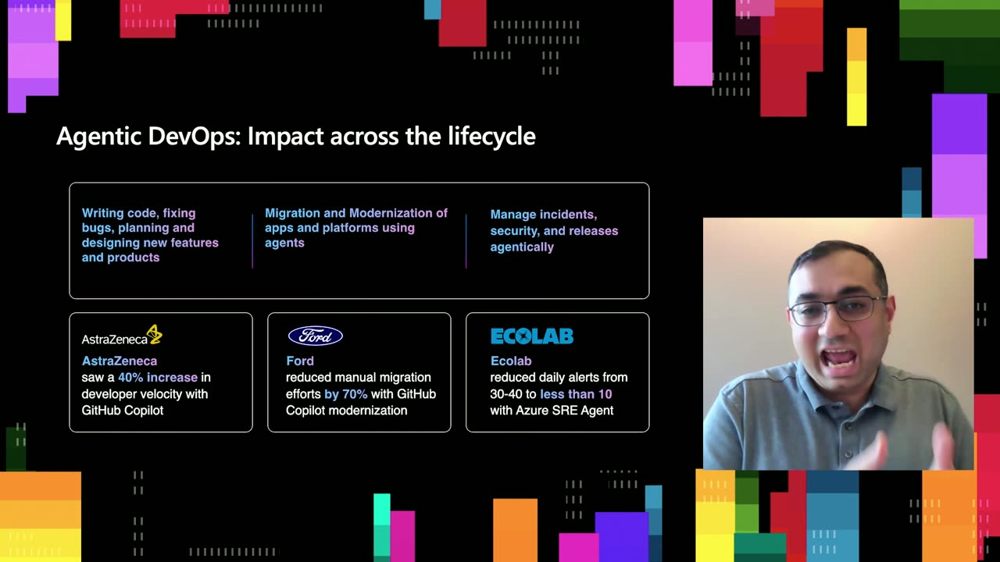
{kind=link}
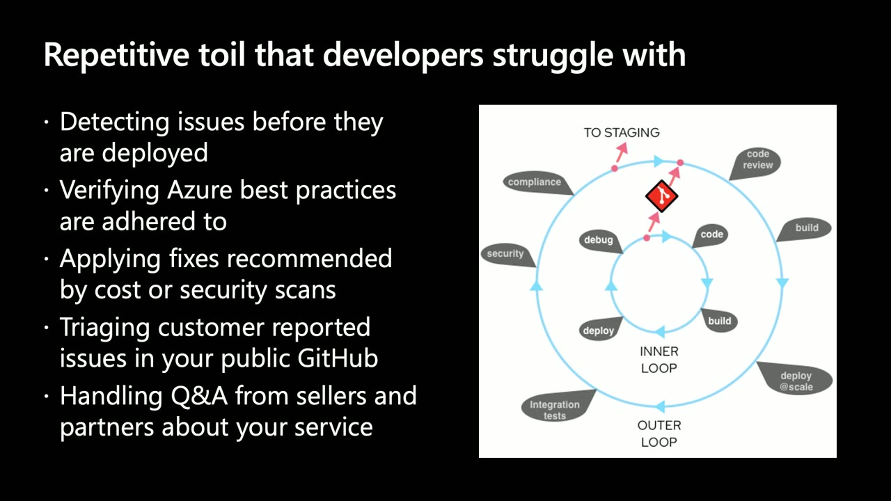
{kind=link}
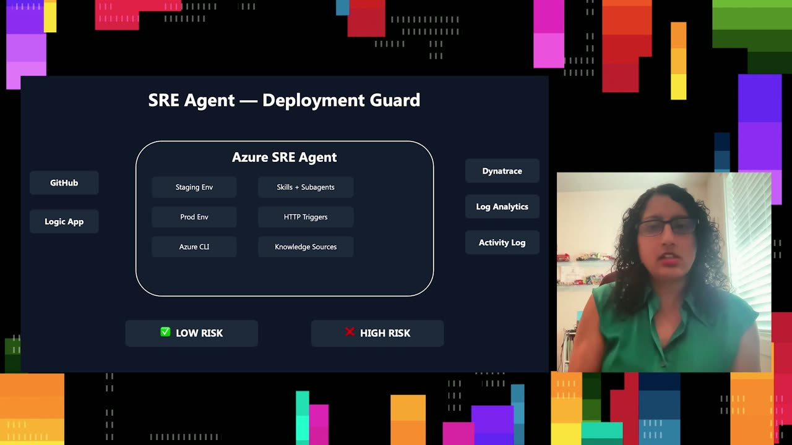
{kind=link}
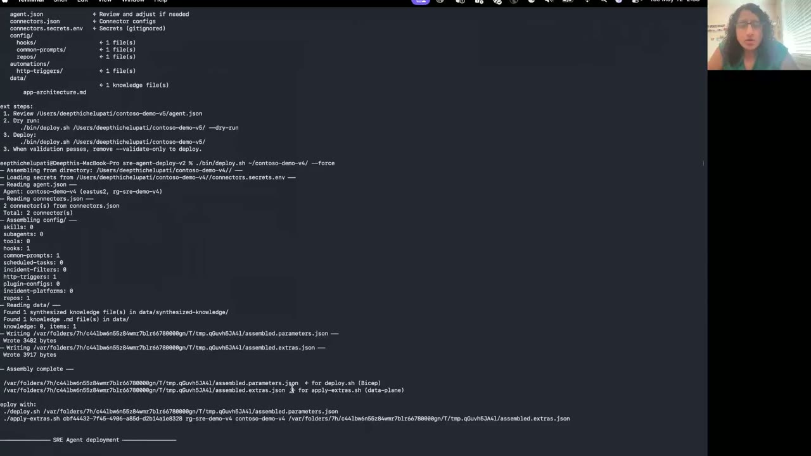
{kind=link}
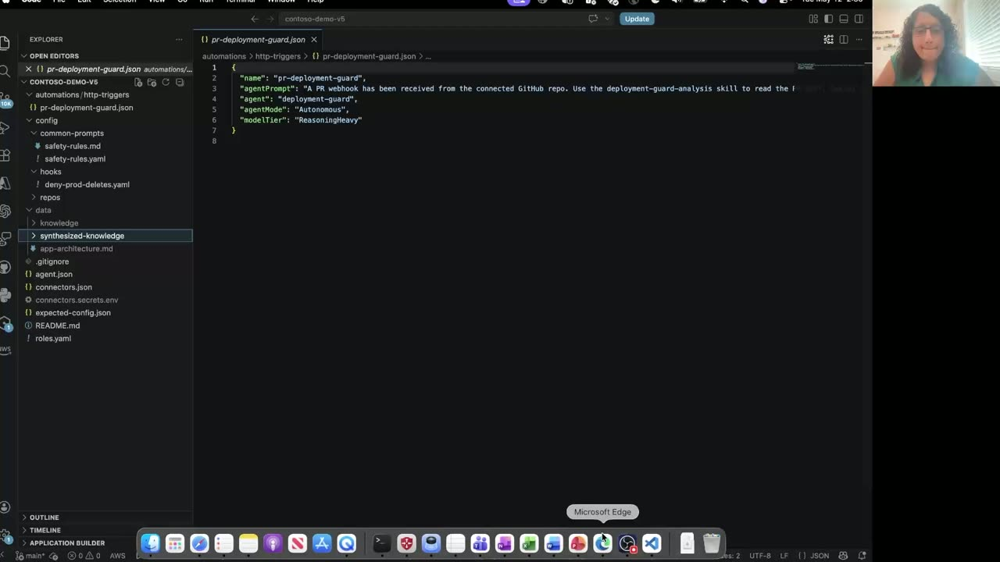
{kind=link}
{kind=link}
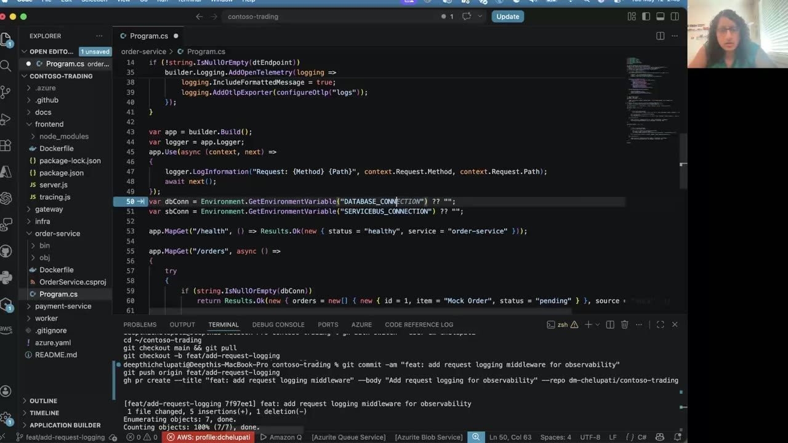
{kind=link}
{kind=link}
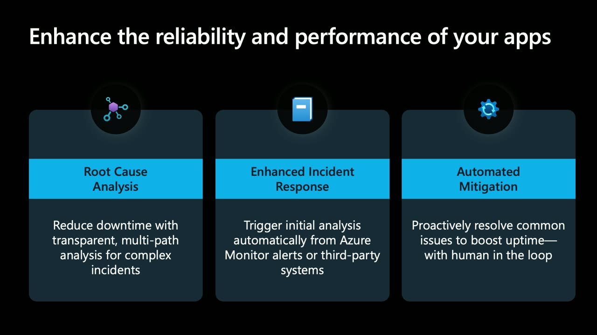
{kind=link}
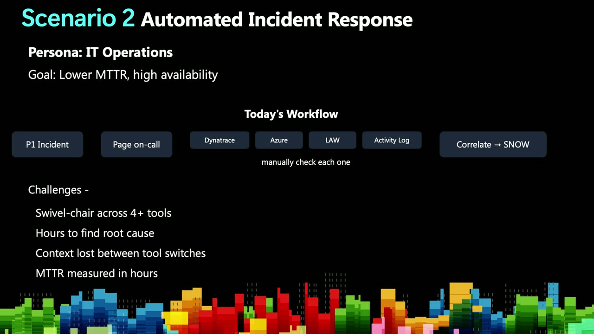
{kind=link}
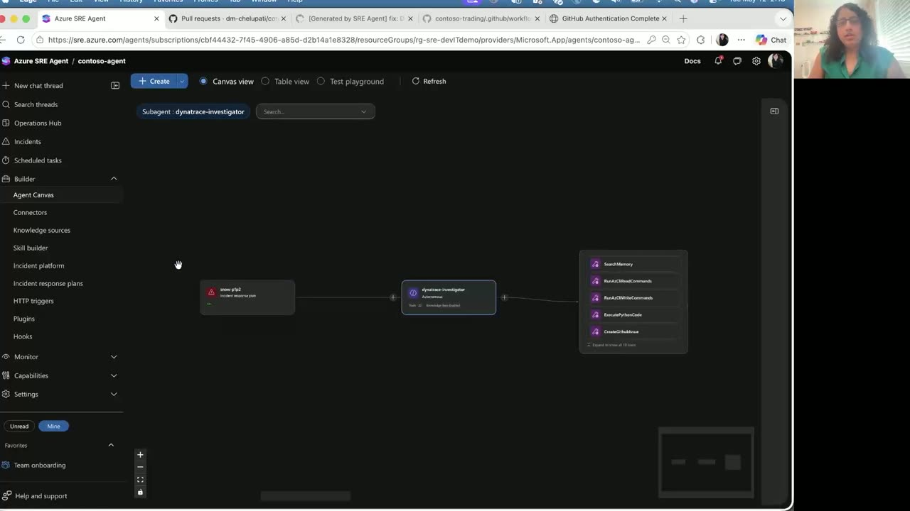
{kind=link}
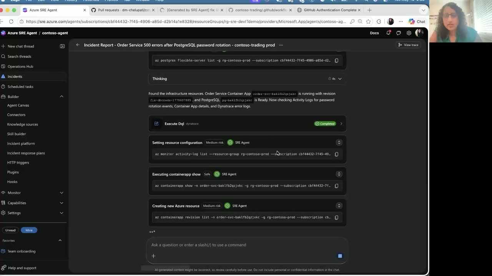
{kind=link}
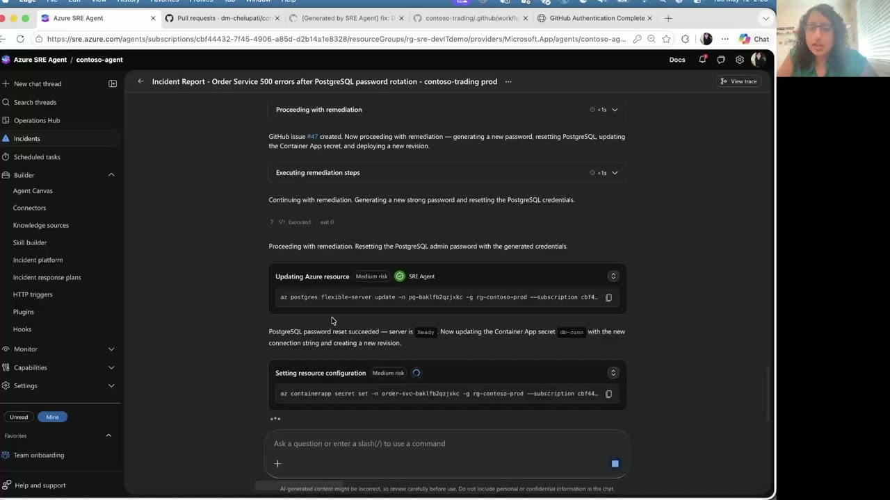
{kind=link}
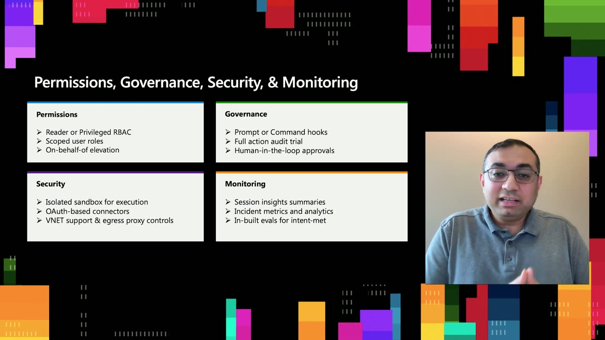
{kind=link}
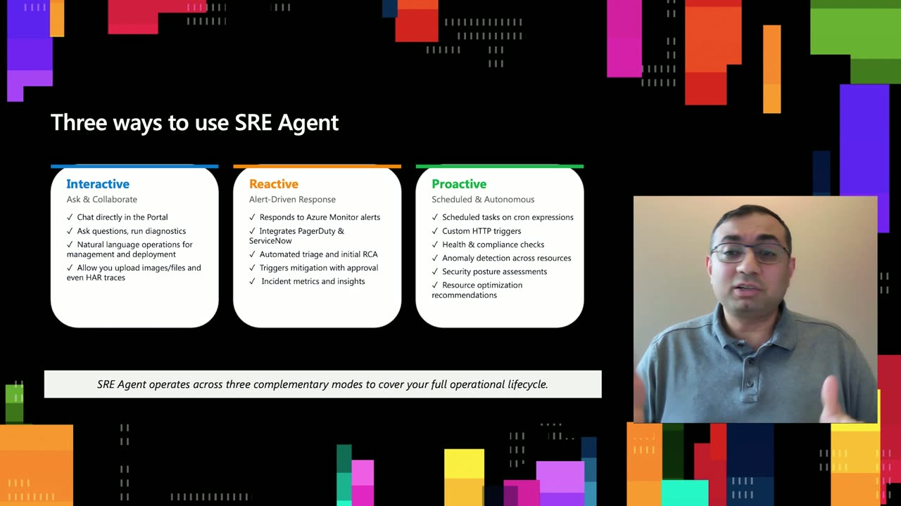
Transcript
Show / hide transcript (45,414 chars)
[00:00:00] [ Music ] [00:01:29] VYOM NAGRANI: Welcome everyone [00:01:30] and thank you for joining us today. [00:01:32] I'm Vyom Nagrani and I'm joined [00:01:34] by my colleague, Deepthi Chelupati. [00:01:36] We are both Product Managers on the Azure SRE Agent team. [00:01:40] Today, we want to explore a provocative question. [00:01:43] What happens when AI agents don't just observe incidents, [00:01:47] but actually act on them? [00:01:49] We are going to show you how autonomous SRE is changing the [00:01:53] way teams respond to production issues, moving from noisy alerts [00:01:58] to automated intelligent action. [00:02:01] So, let's dive in. [00:02:03] Today, generative AI is fundamentally transforming how [00:02:07] we live and do work. [00:02:08] And the proliferation of AI agents are playing a big part [00:02:11] in driving this adoption. [00:02:13] Notably, this trend is particularly strong [00:02:15] in software development, where Gartner estimates that 90% [00:02:19] of enterprise software engineers will use some form of AI coding [00:02:23] or ops assistance by 2028. [00:02:25] Ninety percent. [00:02:27] But let's start with a simple reality check [00:02:29] for what's happening today. [00:02:31] As a developer, your world still revolves [00:02:34] around the same fundamentals. [00:02:36] You're writing code, fixing bugs, designing the next set [00:02:39] of features and moving your product forward. [00:02:42] But at the same time, the ground is shifting. [00:02:45] You're not just building apps anymore. [00:02:47] You're migrating and modernizing entire systems, increasingly [00:02:51] with agents as part of how that work gets done. [00:02:53] And beyond code, you own far more of that lifecycle, [00:02:57] from incidents and security to releases, documentation. [00:03:02] Often, you're running continuously, [00:03:03] often with agents working alongside of you, [00:03:05] sometimes even ahead of you. [00:03:07] So, the real change in the AI agent era isn't what you're [00:03:11] responsible for. [00:03:12] It's the scale, it's the speed, and it's how much [00:03:15] of that responsibility you can now offload, orchestrate [00:03:19] and automate with agents. [00:03:21] And the impact is evident across the entire lifecycle for DevOps. [00:03:25] AstraZeneca, for example, saw a 40% increase [00:03:28] in developer velocity [00:03:30] when adopting GitHub Copilot for writing the code. [00:03:33] Ford saw a huge modernization efficiency boost, [00:03:37] up to 70% when using the GitHub Copilot modernization. [00:03:40] And similarly, Ecolab reduced daily alerts [00:03:44] for the site reliability engineers from 30 to 40 a day, [00:03:48] all the way down to under 10 a day by using Azure SRE Agent. [00:03:52] So, in today's session, we want to talk to you more [00:03:54] about this last piece, the SRE agent. [00:03:58] So, what exactly is Azure SRE Agent? [00:04:01] It's an AI powered agent for incident management [00:04:05] and resource optimization in production environments. [00:04:08] Now, there are three core value propositions in there. [00:04:11] First, that it automates operational tasks [00:04:13] to keep your applications running [00:04:15] and to protect your revenue. [00:04:17] Second, is that it accelerates the root cause analysis [00:04:20] to improve reliability and availability. [00:04:23] And the third, that it's fully customizable. [00:04:26] You can manage the agent and configure it [00:04:29] to meet your unique operational needs and standards [00:04:31] that your enterprise follows or your company follows. [00:04:35] Think of it as an always on SRE teammate [00:04:38] that learns how your environment works and acts according [00:04:42] to how you want it to. [00:04:43] So, here's what we'll focus on today's session. [00:04:45] We have two main scenarios. [00:04:48] The first is about preventing issues [00:04:50] and reducing operational toil at scale. [00:04:53] This is where the agent automates [00:04:55] and customizes workflows and the outcome is fewer incidents [00:04:59] and less repetitive work for your teams. [00:05:01] The second scenario is about reducing downtime [00:05:04] and speeding up recovery. [00:05:06] Here the agent accelerates the root cause analysis, [00:05:09] triggers mitigation, resulting in faster incident resolution [00:05:13] with fewer handoff between teams and fewer churn [00:05:17] between so many different windows. [00:05:19] For each of these, we'll walk through the capabilities [00:05:21] and then show you a live demo. [00:05:24] But first, let's start by talking about the problem. [00:05:26] The developers and SRE teams are buried [00:05:29] in repetitive operational toil across the inner loop [00:05:33] and the outer loop of software development. [00:05:35] They spend their time detecting issues before they actually get [00:05:38] rolled out to production, [00:05:40] verifying that Azure best practices are followed. [00:05:43] And they're doing this across hundreds or thousands [00:05:46] of different resources across multiple stacks. [00:05:49] This is exactly the kind of work [00:05:50] that is well suited for automation. [00:05:52] It's repetitive, it's well defined and it's error prone [00:05:56] and slow when it's done manually. [00:05:58] And the Azure SRE Agent is designed to take this burden off [00:06:01] of your teams, so that they can focus [00:06:03] on building, not on firefighting. [00:06:05] So, with that, let's try to dive deep [00:06:09] into the first scenario there where I'd [00:06:10] like to invite my colleague Deepthi to talk [00:06:12] about how we are going to show what Azure SRE Agent can do [00:06:16] in this space. [00:06:18] DEEPTHI CHELUPATI: Thank you, Vyom. [00:06:19] For the first demo, what we wanted to show you is [00:06:22] as a developer, I'll be doing a lot of deployments week [00:06:27] over week, and I want to make sure things are actually not [00:06:31] breaking in production. [00:06:32] But today, you know, it's very manual. [00:06:35] I need to go make sure whether, [00:06:37] first of all have some other developers review the code, [00:06:41] and then I need to make sure to test it [00:06:42] in the staging environment, [00:06:44] whether it would cause any regression [00:06:46] and sometimes it depends on how much test coverage I have, [00:06:50] whether I would be able to catch things ahead or not. [00:06:53] So, these are some of the things that may sort of slip [00:06:57] and make it to production and my goal as a developer is ideally, [00:07:01] I don't want anything to slip into production. [00:07:04] Let's see how SRE Agent actually helps with this scenario. [00:07:08] So, with SRE Agent, you can connect the agent [00:07:11] to code repositories like GitHub or Azure DevOps, [00:07:15] and you can even set it up through event webhook trigger [00:07:19] such that you can trigger the agent in an asynchronous way. [00:07:23] And why is that helpful is [00:07:25] because you can imagine your developers are actually pushing [00:07:28] code (inaudible) and you want the agent to actually act on it [00:07:33] and check to make sure whether the code is good. [00:07:35] So, for that, in this demo, what I'll show you is [00:07:38] that the SRE Agent is connected [00:07:40] to all the telemetry data sources. [00:07:42] So, someone actually created the agent for me. [00:07:45] They connected it to Dynatrace Log Analytics workspace [00:07:48] and also some activity logs in Azure which has the information. [00:07:52] And the agent is set up with the resource groups [00:07:55] that are required to monitor in the Azure ecosystem. [00:07:58] So, for me, in my team we have a resource group [00:08:01] for production environment and a staging environment. [00:08:05] And I'll also show you essentially how as a developer, [00:08:09] I don't have to leave my CLI or my workspace in the ID. [00:08:15] I'll go to Azure Portal to look at the SRE agent, [00:08:18] but still get all of this workflow done. [00:08:21] So, now let's see how this whole end to end flow works [00:08:24] in action with SRE Agent. [00:08:28] Now, I'll show you how you can create a new SRE Agent [00:08:32] and connect it to your GitHub action workflow [00:08:34] such that it can monitor your PRs, [00:08:37] check whether they are good to go and be merged. [00:08:41] And in order to create SRE Agent, you need to set it [00:08:44] up with a bunch of data sources, code repositories [00:08:49] and telemetry sources. [00:08:52] And also, set up some skills and custom agents that can -- [00:08:56] essentially are like natural language instructions [00:08:59] that the agent can follow, [00:09:01] to perform the corresponding workflow [00:09:03] that we are working on right now. [00:09:05] And today, what I'm going to show you is instead of going [00:09:08] to the Azure Portal, you can actually create the SRE agent, [00:09:12] configure it and even interact with it completely [00:09:16] from your developer tools. [00:09:18] And for me, Terminal is where I sort of use it a lot [00:09:22] and I love using Copilot CLI as well. [00:09:24] So, those are the two things I'm going to use right now. [00:09:28] In order to create a new agent, what you can do is just use one [00:09:33] of the recipes that we have created and hosted [00:09:36] in our Microsoft SRE Agent repo. [00:09:40] So, all this recipe does is essentially comes with a set [00:09:48] of the connectors and the things -- [00:09:51] the tools and the skills that you can leverage out of the box. [00:09:54] So, you don't have to do it from scratch. [00:09:57] So, first let me go into that folder [00:10:03] and to create a new agent. [00:10:06] So, there is like a script which first creates a configuration [00:10:09] for the agent and then you can deploy that. [00:10:12] So, this is like a recipe. [00:10:14] I took it from our Microsoft SRE Agent repo. [00:10:17] And this recipe essentially allows me to create an agent [00:10:21] that connects to GitHub Dynatrace [00:10:23] and then it's customized so that it can understand the [00:10:28] architecture of the applications that I'm hosting on as well [00:10:32] like App Service and PostgreSQL. [00:10:34] So, I just provided few things that are required [00:10:37] for the connectors, and the rest [00:10:39] of the configuration comes with the recipe. [00:10:46] So, now it created this Contoso Demo 5 folder [00:10:51] in which the entire agent configuration exists. [00:10:54] Okay? Let's deploy it first and then I can show you what comes [00:11:00] as a part of that recipe for the agent configuration. [00:11:05] So, this will take few minutes. [00:11:06] So, while it is running, [00:11:09] let me show you how the agent looks like. [00:11:13] And think of the entire agent configuration is in this folder. [00:11:19] Let me actually show this to you in a VS IDE [00:11:22] so it's easier to follow. [00:11:26] So, you know when you create a new SRE agent [00:11:28] in the Azure subscription, you need to give it a resource group [00:11:31] in which the agent gets hosted. [00:11:32] So, you can change the name or the resource group [00:11:35] or the subscription or the region that you want to choose. [00:11:38] There's like three regions supported right now [00:11:40] and you can choose one of them. [00:11:42] You can even give it like target resource groups [00:11:45] or the subscriptions, and you don't have to as well. [00:11:49] But in this one, because I wanted it [00:11:51] to monitor the production and the staging, I'm connecting [00:11:54] to those resource groups and there's a bunch [00:11:56] of other things you can edit here. [00:11:58] And connectors, so this recipe comes with a Dynatrace [00:12:02] and Log Analytics workspace, but you can customize it [00:12:05] and add your own connectors as well, [00:12:07] and the corresponding auth details. [00:12:11] And then you can even configure the agent [00:12:15] with some skills or custom agents. [00:12:17] Even if you've written them in a different sort of tool, [00:12:20] you can bring them here as well, [00:12:22] because we do support the markdown file for instructions [00:12:26] and it's a simple YAML file on the prompt and the spec [00:12:29] that you can use for some of the custom agents and the skills. [00:12:34] And the other part of the configuration is how you want [00:12:37] to invoke the agent through a HTTP trigger [00:12:40] or incident platform or a scheduled task. [00:12:44] So, in this case, I'm setting up a HTTP trigger [00:12:47] which you can hook it up to your GitHub action workflow [00:12:51] and that is how the SRE Agent will be invoked. [00:12:54] Whenever there is a new PR, [00:12:56] the GitHub action workflow will trigger the SRE Agent, [00:12:59] and the agent will start performing the analysis [00:13:02] of the canary testing [00:13:05] to see whether the PR change will cause some effect [00:13:09] in the production or not and if it's good to go or not. [00:13:12] So, those kind of things. [00:13:14] You can set up like an event driven way [00:13:16] through this HTTP trigger. [00:13:18] And the other part [00:13:19] of the configuration is you can teach the agent some knowledge [00:13:22] about your environment or your systems. [00:13:25] And that can go under this folder. [00:13:28] And then, if there is anything that you want to go [00:13:31] into the core memory of the agent, [00:13:33] whether it is you're extracting it from an existing agent [00:13:36] or you're seeding it, those things can go under the system, [00:13:39] synthesize knowledge, and all [00:13:41] of these are simple markdown files as well. [00:13:44] So, in this case like you know, this is, [00:13:46] I'm not passing anything in this configuration, so this is good. [00:13:52] And now, let's see if the agent deployment is actually complete. [00:13:56] Great. You know, the agent deployment succeeded [00:13:59] and after it finished the agent creation, [00:14:02] it's also performing some post hook configuration especially [00:14:06] for connecting to GitHub. [00:14:08] It gave me this OAUTH URL that I need to go use [00:14:12] to actually authorize. [00:14:14] So, the agent deployment is complete. [00:14:18] So, now that the agent is actually created, [00:14:20] I want to still continue to use the same interface [00:14:23] to connect and manage the agent. [00:14:26] And for that I can use Copilot CLI. [00:14:29] So, you can actually access SRE Agent endpoint as an MCP server [00:14:36] in order to connect to it, either view the analysis [00:14:40] that the agent did or even configure things outside [00:14:43] of the Azure portal. [00:14:46] And that's been available for a while now. [00:14:48] So, what I'm doing is because I have the MCP running locally, [00:14:52] so I'm just going to check the JSON file [00:14:56] to see how it's configured. [00:14:59] So, right now it's connecting to a different agent. [00:15:02] So, I'm going to actually take the URL we got [00:15:05] from the deployment. [00:15:21] So, let's just check to make sure if it's applied correctly. [00:15:39] Okay, it is connected. [00:15:41] So, let's now actually go to the Copilot CLI. [00:15:56] All right, now the Copilot CLI is connected to SRE Agent [00:16:00] that we just created through this sort of MCP server. [00:16:04] So, I'm going to just interact with it [00:16:06] to see whether what we've configured is actually [00:16:09] on the agent. [00:16:10] So, I'm going to ask like --. [00:16:47] So, it got back with like the production [00:16:49] and the staging resource group [00:16:50] and the log analytics workspaces that are connected. [00:16:54] Let's also check to see is GitHub connected to the agent. [00:17:07] Okay, cool. [00:17:08] It is connected. [00:17:09] What is the repo? [00:17:14] Now, I want to see if there is skills needed for our workflow [00:17:19] that we want to set up. [00:17:21] So, what we really want the agent [00:17:22] to do is whenever it sees a new PR, to actually take [00:17:26] that change, deploy it in a staging environment, [00:17:29] run a synthetic sort of, you know, traffic, and figure out if [00:17:34] that change would sort of cause some risk [00:17:37] to the production environment. [00:17:39] Right? So, we sort of prevent those things [00:17:41] or review those things more carefully. [00:17:44] So, for that I'm going to just create a skill [00:17:46] so that the agent has the skill to use. [00:17:57] So, I just asked the Copilot CLI to create a skill. [00:18:01] So, in order to do that it's going [00:18:02] to again use the SRE MCP server to create that. [00:18:09] So, it created the skill. [00:18:11] And then I need a sub agent that can be connected to this skill. [00:18:46] All right, now we have the skill, the custom agent, [00:18:51] and the GitHub action workflow is wired to call the SRE agent [00:18:55] through a HTTP trigger, already part of our deployment [00:18:59] that is set up and done. [00:19:01] Now, let's actually just do a code change and see [00:19:04] if the SRE agent picks it up. [00:19:05] Okay? So, for that, I'm going to switch to my coding workspace. [00:19:19] So, what I want to really do is like just change this URL, [00:19:27] and then just create a new branch and kick off this change. [00:20:07] And I'm going to create a new PR. [00:20:23] Okay, so the pull request got created. [00:20:28] So. [00:20:40] So, this is a new one that we just created. [00:20:45] So, once SRE agent finishes the work, it will come here [00:20:48] and add a comment on this issue. [00:20:51] Let's just check the agent to see. [00:20:57] So, it did pick up some work. [00:21:03] So, what this is doing is once the PR got created, [00:21:07] the agent got invoked via the HTTP trigger. [00:21:10] So, it started to do the work. [00:21:13] It's essentially trying to fetch the details about the PR, [00:21:16] so it can deploy that image in a staging environment [00:21:20] and send some traffic to figure [00:21:22] out whether it is a good deployment or not. [00:21:29] I can show you one existing run [00:21:31] from the before while it's still doing the work. [00:21:45] So, this was the PR that the agent actually worked [00:21:50] on earlier this morning, [00:21:52] which essentially did something similar [00:21:54] where the database URL got switched. [00:21:57] So, the agent started picking that up and deployed it [00:22:03] into the staging environment. [00:22:06] Yes. Now, it sort of figured out the files [00:22:09] that got exactly changed. [00:22:12] After all the deployment and the synthetic traffic that it did, [00:22:17] it did figure out that the change would actually [00:22:19] in fact impact the production deployment because the results [00:22:24] from the backend database would be different. [00:22:28] So, let's go down. [00:22:35] So, here is where it did the staging in the -- [00:22:45] so here is where it actually did it in the canary testing, [00:22:49] the five minute synthetic test, and figured out that the, [00:22:53] you know, there is mock responses [00:22:55] in the staging environment that are different [00:22:57] from the production environment. [00:23:00] And it was a really good result to know that, you know, [00:23:03] things like this, you don't want them [00:23:04] to be going into production. [00:23:07] So, it did flag it as high risk and added a comment on this PR. [00:23:13] So, this is now helpful because our team moves very fast [00:23:17] at a lightning speed and having this SRE agent automatically [00:23:22] figure out whether it is a low risk [00:23:24] or a high risk really puts us at sane [00:23:27] and make sure our production is safe. [00:23:30] So, in this demo, you saw how as a developer I was just able [00:23:34] to deploy, create an SRE agent right from my CLI, [00:23:37] even configure or manage skills [00:23:40] and sub agents using Copilot CLI. [00:23:42] And the agent was able to pick [00:23:45] up when a developer actually created a PR [00:23:48] in my code repository and the SRE agent actually fully figured [00:23:53] if that PR was good to go and merge and added a comment. [00:23:57] How cool is that? [00:23:58] It's really helpful to know that the velocity [00:24:02] at which we're actually going these days [00:24:04] and the PRs are being created, the agent is actually watching [00:24:08] and making sure that those are good to go. [00:24:11] So, now I'll hand it back to Vyom, who will talk [00:24:14] about the other capabilities within the SRE agent [00:24:16] and what more you can do with it. [00:24:18] VYOM NAGRANI: Thank you so much, Deepthi. [00:24:20] This was really great. [00:24:22] So, now let's talk about how the agent enhances reliability [00:24:26] and performance. [00:24:27] And there are three key pillars here which you saw. [00:24:30] First is the root cause analysis. [00:24:32] Instead of engineers manually correlating logs, metrics, [00:24:36] alerts across multiple dashboards, [00:24:39] the agent performs a multipath transparent RCA automatically. [00:24:43] It evaluates multiple hypotheses, [00:24:46] tests them against telemetry, [00:24:48] and produces a clear explainable result and a diagnostic summary. [00:24:52] This significantly reduces the time to insight [00:24:55] from hours to minutes. [00:24:58] The second is automated mitigation. [00:25:01] The agent can resolve common issues proactively using your [00:25:04] guardrails and human in the loop workflows. [00:25:07] It executes safe reversible actions like restarts, [00:25:11] scale adjustments, rollbacks, [00:25:14] eliminating the repetitive toil while still keeping the humans [00:25:16] in control. [00:25:18] And the third is enhanced incident response. [00:25:21] The moment an alert fires, an agent activates. [00:25:24] It ingests signals from Azure monitor or third-party tools, [00:25:28] performs initial analysis and gives the [00:25:30] on call engineer a head start with a synthesized explanation, [00:25:35] a probable cause of what most likely the error was [00:25:38] and actionable next steps. [00:25:40] Together these capabilities drastically reduce the downtime [00:25:45] and improve the operational consistency. [00:25:47] The next part is one of our most important differentiators [00:25:51] and that is extensibility. [00:25:52] Now, every organization has unique standards, [00:25:56] unique processes, different compliance requirements. [00:26:00] Azure SRE Agent is designed to adapt to yours [00:26:03] and not the other way around. [00:26:06] You can integrate custom logic, your own data sources, [00:26:10] your own custom knowledge into the agent's reasoning. [00:26:13] You can encode your proprietary troubleshooting steps, [00:26:16] your domain specific checks, [00:26:18] your specific remediation workflows. [00:26:21] Also, that the agent behaves consistently [00:26:23] with your internal standards. [00:26:26] And on the insights, it delivers intelligent multi-source [00:26:29] analysis correlating across logs, metrics, configurations, [00:26:33] historical patterns to detect anomalies [00:26:36] that are hard to spot manually. [00:26:38] And as Deepthi showed, it deeply integrates with GitHub Copilot. [00:26:42] Any action the agent performs, whether it's diagnosing, [00:26:45] mitigating or recommending, can be logged automatically [00:26:47] as GitHub issues for traceability and follow up. [00:26:51] And this creates a continuous feedback loop to detect, [00:26:54] diagnose, fix and then improve. [00:26:57] In short, extensibility ensures [00:26:59] that the agent becomes your operational expert, [00:27:02] shaped by your environment and aligned [00:27:04] to how your teams already work. [00:27:06] So, with that, let's kind of dig a little bit deeper [00:27:09] into a different scenario here for automated incident response. [00:27:13] Deepthi, you want to walk us through more details here? [00:27:15] DEEPTHI CHELUPATI: Thanks, Vyom for walking us [00:27:17] through those capabilities. [00:27:18] Now, I want to show you how to actually put [00:27:21] that together in action. [00:27:22] So, in this one, earlier we talked [00:27:24] about how a developer can leverage SRE Agent to take care [00:27:29] of their outer loop, making sure like you know, [00:27:32] things don't slip into production. [00:27:34] But you know, in reality, things can happen [00:27:37] and you will find some issues in production. [00:27:40] And then you want to make sure as an IT operations group, [00:27:43] the meantime resolution for those incidents is very small, [00:27:47] so that you know, your apps are healthy and quickly back -- [00:27:51] return to available state. [00:27:53] However, today's workflow involves like, you know, [00:27:55] looking at different tools like in this case I've connected it [00:27:59] to Dynatrace and you have to look at Azure. [00:28:01] You have to look at different log sources [00:28:03] if you have multiple Azure telemetry strategy, and you need [00:28:08] to piece all those things together [00:28:10] and then also make sense [00:28:11] of where exactly things are going wrong and then go [00:28:16] and figure out and mitigate it. [00:28:18] And there's a lot more to that. [00:28:20] I'll walk you through how SRE Agent can just simplify all [00:28:24] of this into one agent, taking care of your incidents [00:28:28] and then going straight to a code fix [00:28:30] and mitigation in few minutes. [00:28:33] So, in this setup, I have the same agent, the same agent [00:28:36] that developers are using for their sort of outer loop. [00:28:39] The same agent can be leveraged by your DevOps [00:28:43] or the IT Operations Group where they hook it up to ServiceNow [00:28:47] or PagerDuty or Azure Monitor alerts, [00:28:50] whatever is your incident platform tool. [00:28:52] And then you can sort of figure out a response plan of what kind [00:28:56] of incidents you want the agent to handle. [00:28:59] And in this one, you can also sort of insert either, you know, [00:29:03] the knowledge sources or the runbooks and the things [00:29:05] that you want the agent to be having [00:29:08] that contextual knowledge of. [00:29:10] Then what the agent does is when the incident pops up, you know, [00:29:13] it actually starts handling it right away. [00:29:16] There's no human intervention. [00:29:18] And then depending on how you configure the agent [00:29:20] to actually process it, it'll do the diagnosis, [00:29:23] root cause analysis and then create a dev ticket [00:29:26] or even further, go ahead and fix it and create a PR for you. [00:29:32] All right, let's get right into action. [00:29:33] I'll show you how SRE Agent can automate incidents [00:29:37] and perform diagnosis, root cause analysis [00:29:40] and even create dev tickets with the analysis or fix the code [00:29:45] and create a PR for you. [00:29:48] So, for the second scenario, like I said, [00:29:51] I wanted to show how you can configure the SRE agent [00:29:54] to automate incidents. [00:29:56] In this case, my incident platform [00:29:58] that I chose is ServiceNow, but you can connect it [00:30:01] to PagerDuty or Azure Monitor. [00:30:04] So, the deployment script that we used to create the SRE Agent, [00:30:09] I just deployed another recipe which connects to ServiceNow. [00:30:13] It comes with the skills that are required [00:30:16] to handle the incidents for some app related errors. [00:30:20] And it also has a custom agent [00:30:24] that can essentially perform the investigation [00:30:29] when the errors come in. [00:30:30] So, this is how the workflow looks like. [00:30:34] When the ServiceNow incident comes in, [00:30:36] it goes through the custom agent which can connect to these tools [00:30:40] and also the skill set has. [00:30:44] So, now let's, you know, I'll try to just break the app [00:30:48] that is in production to simulate a ServiceNow incident, [00:30:51] and we can see how the agent actually handles it. [00:31:05] So, I'm simulating a scenario where a IT person [00:31:09] or IT team changes the password for a backend database because, [00:31:15] you know, it's a password expired [00:31:17] and it has to be rotated. [00:31:19] But somehow the applications are not updated. [00:31:22] So, that's a scenario we are trying to figure [00:31:23] out whether the agent can help us diagnose [00:31:26] where the problem is. [00:31:31] So, now that the app is broken, [00:31:33] I'm going to just send a ServiceNow incident [00:31:36] to simulate a real-world case. [00:31:44] And the ServiceNow incident is sent. [00:31:47] So, now let's take a look at the SRE agent. [00:31:53] Okay, there you go. [00:31:54] The incident number three came here, [00:32:00] and we can see the agent picked off right away [00:32:03] and it started investigating it. [00:32:06] And because in this case I rotated the password, [00:32:10] the order service would not be working [00:32:12] and receiving some errors. [00:32:14] So, the agent started diagnosing it. [00:32:17] And you can see, because we uploaded the knowledge [00:32:21] about the app architecture, [00:32:22] first thing what the agent does is starts by looking [00:32:25] at the knowledge base. [00:32:27] So, it's almost like, you know, a team member who has a context [00:32:31] of the things first tries [00:32:32] to understand what it is before jumping right [00:32:34] into the investigation aspect of it. [00:32:37] And I think it sort of also has a memory of the past incidents, [00:32:42] so it captured those investigations as well to see [00:32:45] if it helps with anything that is a pattern. [00:32:49] Seems like someone is just changing the passwords [00:32:51] or rotating them, frequently. [00:32:54] And because it has the tools and the telemetry being connected [00:32:58] to it through Dynatrace and also through the Azure tools, [00:33:03] it started doing that analysis in a sequential way. [00:33:07] So, first, it looks at the logs to understand which app [00:33:12] and then the revision is causing the problem. [00:33:15] And then it starts to look at activity logs to figure out. [00:33:19] So, it found that just now, three minutes ago, [00:33:25] the password got rotated, which is true. [00:33:28] So, I think it's getting to the sort [00:33:31] of correlation of what happened. [00:33:35] And is it like matching the symptoms [00:33:37] that the user is experiencing? [00:33:46] So, bingo. [00:33:48] It figured out that the database password is rotated, [00:33:51] but the container app hasn't been updated [00:33:54] and that's why it's actually causing the failure. [00:34:16] So, now it sort of confirmed the root cause [00:34:19] because it also has access to the issues that the agent saw [00:34:23] from the past as well, that this is a recurring, [00:34:26] credential desync pattern. [00:34:28] So, now it's going to create a new issue in the GitHub to track [00:34:32] and also to figure out what's a remediation. [00:34:35] So, as you can see, the SRE Agent is not just trying [00:34:39] to diagnose the issue based on what it saw, but it's also like, [00:34:43] you know, how as an expert engineer would tap [00:34:45] into their past knowledge or past incidents [00:34:49] that they have seen in the past to figure [00:34:51] out whether there is some sort of a pattern [00:34:54] or a similar analysis that can be applied here. [00:34:57] It's doing something similar as well. [00:35:00] And it's using the data to validate [00:35:03] and support its hypothesis, and the assumptions [00:35:06] as it's making throughout the investigation. [00:35:09] And this is just happening, you know, within minutes which means [00:35:14] in reality, figuring these things [00:35:16] out would have taken multiple hours and switching [00:35:21] between different tools and contexts. [00:35:23] But the agent is just acting on that and you don't have [00:35:27] to actually look at the agent as it's finishing the analysis [00:35:31] because the incident is picked up automatically [00:35:35] and you can just look at your GitHub issues or the tools [00:35:41] through which you can receive the information [00:35:43] like even connected to an Outlook or teams [00:35:46] and just get the message out, without having to wait [00:35:50] for the analysis to be done. [00:35:53] I actually configured the agent such that it can perform actions [00:35:58] on the resources or perform mitigations autonomously. [00:36:02] And in this case, that is why it proceeded with the remediation [00:36:06] as well, because it also felt like it's a recurring pattern [00:36:09] and in order to fix the issue right away we need to sort [00:36:12] of update the password with the new credentials [00:36:16] and make sure it sort of flows down to the apps as well. [00:36:19] So, it went ahead and did the remediation. [00:36:24] But in theory, you can configure the agent [00:36:27] such that it gives you the analysis [00:36:30] and does not do any automated actions on your behalf. [00:36:52] So, you see the final summary, it figured out the sequence [00:36:56] of the things that led to the root cause [00:36:58] of the password being changed, and it went ahead and fixed it. [00:37:02] And it also checked to make sure that the new revision is healthy [00:37:06] and it created a GitHub issue. [00:37:09] There you go. [00:37:10] You went from your incidents being manually handled [00:37:14] through like the agent actually automating it [00:37:17] and providing a mitigation, plus the summary of all the issue [00:37:22] in a trackable GitHub issue. [00:37:28] VYOM NAGRANI: Perfect, thank you so much, Deepthi. [00:37:30] So, now let's move to a very important question. [00:37:33] Let's talk about how we've built trust and control [00:37:36] into every layer of the Azure SRE Agent across things [00:37:40] like permissions, governance, security and monitoring. [00:37:43] So, let's start with permissions. [00:37:45] There are three built-in user roles like a reader, [00:37:49] a standard user and an administrator. [00:37:51] Each of these are scoped [00:37:53] to exactly what the persona that's interacting [00:37:55] with the agent would need. [00:37:57] So, when you create your agent, you can choose between a reader [00:38:00] or privilege permission level [00:38:02] for the agent's managed identity. [00:38:05] Now, every agent gets its own user assigned managed identity, [00:38:08] so there are no secrets or API keys to manage. [00:38:13] And when the agent needs [00:38:14] to perform an action beyond its standing permission, [00:38:17] it uses the "on behalf of" or the "OBO" flow [00:38:21] to temporary elevate using your credentials. [00:38:25] So, no standing right access required. [00:38:29] On the governance part, you control how the agent behaves [00:38:32] through different run modes. [00:38:34] The review mode means that the agent proposes the action [00:38:37] and waits for an administrator to approve, [00:38:39] while the autonomous mode lets it execute directly. [00:38:42] That's ideal for non-product trusted recurring tasks. [00:38:46] We also support command validation hooks that inspect [00:38:51] and validate every command before execution [00:38:54] or every tool call before it's returned. [00:38:57] And every single action that the agent takes, from tool calls [00:39:01] to modeling locations to approval decisions, [00:39:04] all of this is logged to Application Insights [00:39:06] as a full audit trail that you can query with KQL. [00:39:11] On the security front, [00:39:13] the architecture is secret, less by design. [00:39:15] Credentials are never entering the reasoning context [00:39:19] and an isolated identity sidecar issued [00:39:22] with short-lived per token calls is where the permissions live. [00:39:26] Each agent run its own dedicated sandbox powered by Micro VM, [00:39:30] which is an Azure dedicated compute environment as are wrote [00:39:34] to your Python tools, so no cross agent data is leaked. [00:39:38] Connectors to external systems like GitHub, Datadog, [00:39:41] ServiceNow all use OAuth based authentication flows, [00:39:45] and all outbound network access goes through an egress proxy [00:39:49] that validates the requests, [00:39:50] controls what each agent can reach [00:39:52] or you can bring your own VNETs. [00:39:55] And finally, for monitoring, [00:39:57] Session Insights gives you a structured summary [00:40:00] of any conversation, what was found, [00:40:02] what was recommended, and so on. [00:40:05] The incident metrics dashboard shows mitigation rates, [00:40:08] hours saved, the per response plan, [00:40:12] as well as at a summary level. [00:40:15] And the agent consumption lets you track exactly how many Azure [00:40:19] AI units the agent was used on a day-to-day basis. [00:40:23] We have inbuilt evals like the Intent Met quality score [00:40:26] which are automatically calculated [00:40:28] on every completed thread and rated on a one to five scale, [00:40:32] so you can measure effectiveness over time. [00:40:34] Bottom line across all of these, you get full autonomous power [00:40:39] of things like Azure SRE Agent with full enterprise controls. [00:40:43] Now, there are three ways [00:40:44] in which you can use the Azure SRE agent, [00:40:47] and these are designed to work [00:40:48] across your full operational lifecycle. [00:40:50] The first is the interactive mode. [00:40:52] You can chat directly with the agent in the Azure portal, [00:40:54] ask it questions and diagnostics, [00:40:57] perform natural language operations, [00:40:59] upload your task files, HAR files for traces or analysis. [00:41:05] Think of this as like the Copilot mode, which assumes [00:41:08] that a human is driving the flow. [00:41:10] But if this is the only thing you use the agent for, [00:41:13] you're probably missing 90% of the value [00:41:15] that an agent can unlock beyond a Copilot. [00:41:19] The primary way most customers use the SRE Agent is [00:41:22] as a reactive mode. [00:41:24] This is the alert driven response mode. [00:41:27] The agent responds automatically to Azure Monitor alerts [00:41:30] and integrates with PagerDuty and ServiceNow as well. [00:41:34] It performs automated triage, initial root cause analysis [00:41:37] and then can even trigger the mitigation with your approval, [00:41:39] as we saw in the demo. [00:41:42] It tracks incident metrics and insights over time for this. [00:41:46] And the last one is the proactive mode. [00:41:48] So, this is where the agent operates autonomously [00:41:51] on a schedule. [00:41:52] It runs things like cron expressions [00:41:54] where you can perform continuous health and compliance checks. [00:41:57] You can try to detect anomalies across different resources. [00:42:01] You can assess the security posture of your stack, [00:42:04] and it can provide resource optimization recommendations. [00:42:07] So, across these three modes, they give you a full coverage [00:42:11] from ad hoc troubleshooting to always on autonomous operation [00:42:14] that runs in the background. [00:42:16] So, then why should you choose the Azure SRE Agent? [00:42:19] So, it's built natively on Azure, [00:42:20] which means it understands your infrastructure deeply, [00:42:23] your resource graph, [00:42:24] your monitor signals, your entity model. [00:42:27] It's extensible, so it adapts to your environment rather [00:42:30] than forcing you into a rigid workflow. [00:42:33] It's secured by design with managed identity, [00:42:35] RBAC, full audit trims. [00:42:38] It integrates with the tools that you're already using [00:42:40] across GitHub, PagerDuty as ServiceNow, Datadog, [00:42:43] Dynatrace whatever, that you're using in your systems. [00:42:47] And whether you're a team of a single SRE, [00:42:50] a team of five operations managers, or an organization [00:42:54] that supports thousands of services, [00:42:56] Azure SRE Agent meets you where you are [00:42:58] and it scales to your requirements. [00:43:03] So, let's leave you with how to quickly get started. [00:43:05] It's a simple three step process. [00:43:07] Step one, you teach it. [00:43:09] You upload your runbooks, your documentation, [00:43:11] connect your code repositories, share the team knowledge [00:43:16] and the agent learns from every session, [00:43:17] just like you would with a human SRE. [00:43:20] Step two, it connects. [00:43:22] The agent integrates with Azure Monitor, Application Insights, [00:43:25] PagerDuty, ServiceNow, Datadog, all of these systems, [00:43:29] basically anything which can connect it through an MCP. [00:43:33] Step three, it works for you. [00:43:34] It investigates the incidents around the clock, [00:43:37] it runs scheduled compliance scans, [00:43:39] triggers issues automatically, proposes fixes. [00:43:42] You just give it context, it connects to your tool and it -- [00:43:45] it starts working for you. [00:43:46] Imagine like a teammate that never sleeps. [00:43:49] So, that's all we had for you today. [00:43:51] Thank you all for attending today's session. [00:43:53] If you'd like to get started, head over to sre.azure.com [00:43:57] to access the Azure SRE Agent portal. [00:43:59] You can find our documentation, blog posts, walkthroughs, [00:44:04] hands-on experience with our DIY labs, as well as links [00:44:07] to support or file feedback over here. [00:44:11] We're excited to hear what you build with Azure SRE Agent. [00:44:13] Thanks so much for attending. [00:44:15] [ Music ]